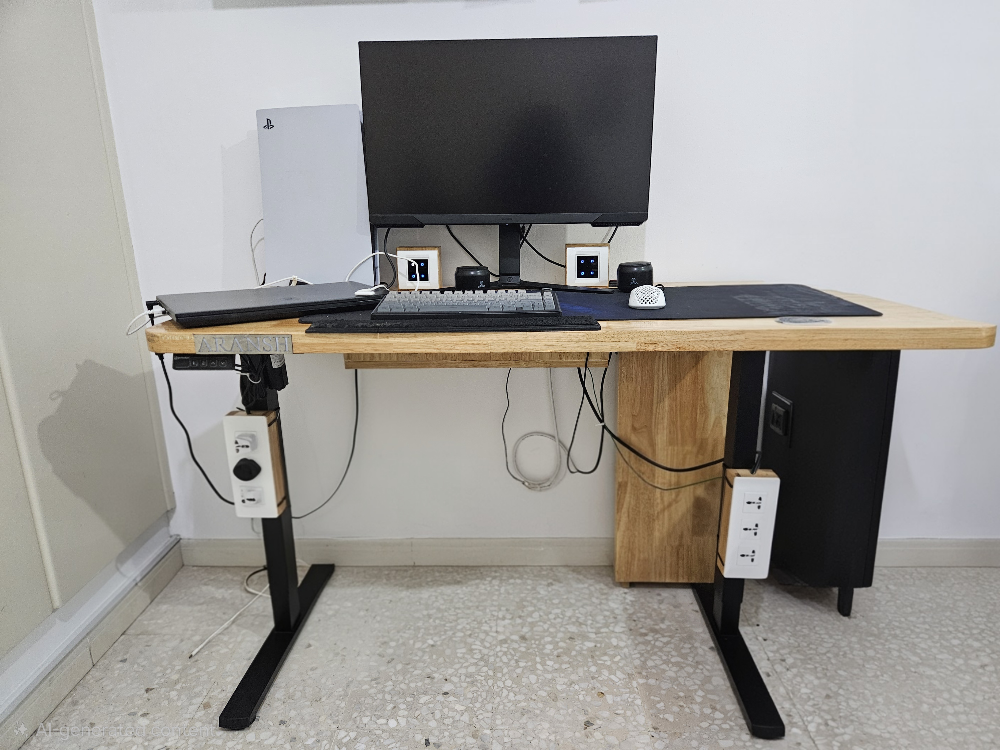

Aransh Rajesh
The vision behind AR Smart Desk
Architecting a setup where utility meets mechanical elegance and innovation.

Arduino-managed thermals
Fans that react to temperature automatically.
Concealed cable paths
Every wire routed inside the frame.
Automated display mounts
Screens that move out of the way on command.
About the project
Built out of frustration with cluttered desks
The inception of this journey stemmed from sheer dissatisfaction with typical, cluttered work areas, pushing me to build a superior alternative. Drawing on my proficiency with electronics and physical hardware, I developed a sophisticated AR Smart Desk system. Through the inclusion of Arduino-managed thermals, concealed cable paths, and automated display mounts, I transformed a standard domestic furniture piece into a high-performance hub.
Hello! My name is Aransh Rajesh. I am an A level student at Repton Abu Dhabi who is a prospective engineering student with a passion for building and taking things apart. This venture stands as evidence of my engineering drive and serves as a primary showcase for my technical capabilities as I prepare for top-tier university engineering programs.